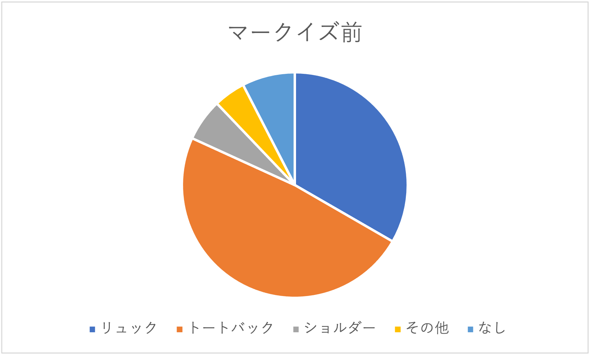
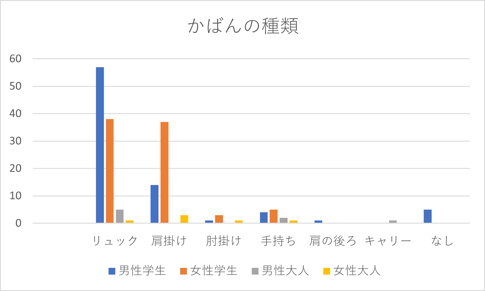
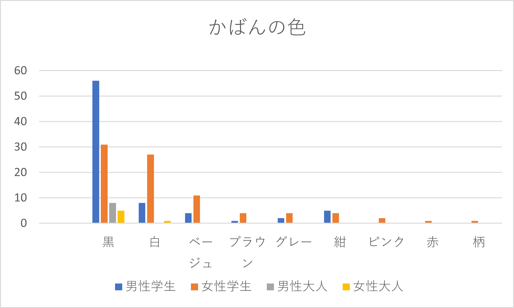

9班 観察結果
目次
観察テーマ
鞄
鞄の形、色、掛け方を観察した。
また、性別、年齢を分類して観察した。
年齢は子供、学生、大人、老人で分けた。
2 MARK IS前 観察結果

30分ほど観察した。
通る人のほとんどはトートバックもしくはリュックだった。
傾向として男性はリュックが多く、女性はトートバックが多かった。
観察できた年齢は平日の午後のためか、男女ともに大人が多かった。
鞄の色は黒が多く、他に特別多い色はなかった。
3 みなとみらいキャンパス前 観察結果


キャンパス前では観察対象年齢は学生と大人の二通りとした。
ほとんどの学生はリュックもしくはトートバックだった。
男性はMARK ISと同様にリュックが多かったが、
女性ではリュックとトートバックが拮抗していた。
色では男性は多くの人が黒だったが女性は黒の他に白、ベージュが多かった。
また、色の種類も男性より女性の方が多かった。